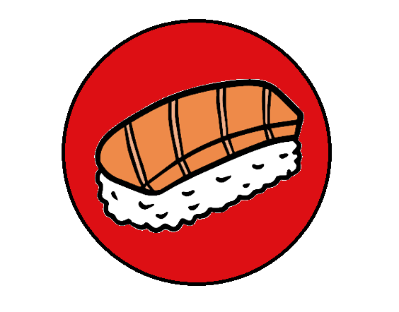

SUSHIS NITCHY

VOICI L'HISTOIRE DU SUSHIS
Depuis plus de 1500 ans , l’Asie est un continent où la pêche et la culture du riz sont très présentes. Les habitants confrontés au problème de conservation des produits de la mer, ont commencés à se servir du sel et du riz en plaçant le poisson entre des couches de riz fermentés.
L’origine du Sushi
Ainsi, l’acide lactique créée grâce à cette technique empêchait la dégradation du poisson et permettaient de le consommer plusieurs mois après la pêche, contrairement au riz qui était jeté. Il faudra attendre jusqu’au VIIe siècle pour que les japonais mettent fin à ce gaspillage en se mettant à manger aussi cette céréale. Si le sushi est connu pour être une invention purement japonaise, c’est car la Chine vit complètement disparaître cette méthode au cour de ce même siècle. Au XVe siècle, les habitants d’Edo (ancien nom de Tokyo) eurent l’idée d’ajouter du vinaigre de riz afin d’accélérer le processus de fermentation.
Du sushi au restaurant
Le sushi que l’on connaît aujourd’hui a été inventé en 1824 par Hanaya Yohei, un vendeur des rues d’Edo. Sa volonté fût de préparer des sushis qui pouvaient être rapidement mangés à la façon “fast-food”. Ainsi, il façonna à la main des sushis avec un riz seulement vinaigré et y ajouta du poisson frais. Le succès fut rapide dans la capitale comme dans tout le Japon. Au lendemain de la Seconde Guerre Mondiale, les restaurants de sushis se sont développés et ont très vite pris la place des vendeurs de sushis dans la rue.
Depuis, les sushis ont rapidement été adopté et apprécié des cultures occidentales. Tendance, il est aujourd’hui une alternative plus saine aux traditionnels fast-foods.